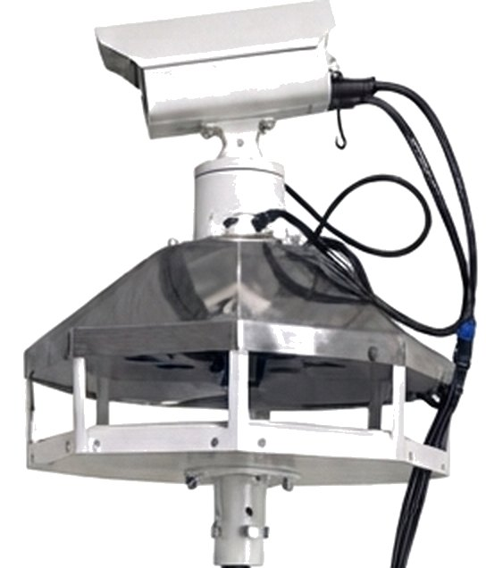
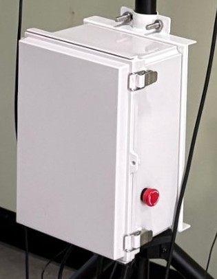
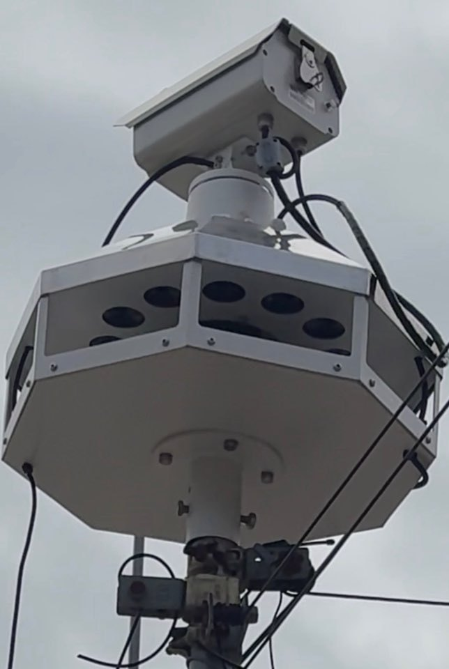

빛 + 소리 + 눈부심, 새벽부터 해 질 때까지 한꺼번에.
폭음기나 소리만 나는 퇴치기는 처음엔 효과가 있다가도 새가 금방 익숙해집니다. 스마트 조류퇴치기 T1은 회전하는 녹색 레이저, 사방으로 퍼지는 천적 울음소리, 햇빛에 번쩍이는 반사경을 함께 써서 새가 한 가지에 익숙해질 틈을 주지 않습니다.

빛과 소리가 동시에 작동해 새가 익숙해질 틈을 주지 않습니다.
반경 약 200m(지름 약 400m)는 예천 사과밭 현장에서 확인한 결과입니다. 소리가 닿는 거리는 볼륨과 지형·바람 등 현장 상황에 따라 달라집니다.
일반 혼 스피커는 한 방향만, T1은 방향 조정 없이 주변 전체를 담당합니다.
혼이 향한 한 방향으로만 멀리 보냅니다. 방향별로 여러 대를 세워야 전체를 덮을 수 있습니다.
과수원 한가운데 1대를 세우면 설치 위치만 정해도 사방으로 고르게 퇴치음이 퍼집니다. 넓은 곳은 여러 대를 겹치게 배치합니다.
스피커가 지붕 아래에 숨어 있어 비·눈·직사광선이 직접 닿지 않습니다.
회전하는 녹색 레이저가 과수원 위를 쓸며 나무에 앉은 새를 쫓아냅니다.
4가지 빔 무늬를 번갈아 반복해서 쏩니다 (예시)
한 번 맞춰 두면 조작함 덮개를 열 필요 없이 버튼으로 켜고 끕니다.
버튼을 풀면
켜짐
빛 · 소리 · 눈부심
함께 작동
버튼을 누르면
꺼짐
떼어서 옮겨
다시 세우기


| 제품명 | 스마트 조류퇴치기 T1 (Smart Bird Repeller T1) |
|---|---|
| 제조사 / 제조국 | 팍스오디오 / 대한민국 |
| 지키는 범위 | 과수원 한가운데 1대로 5천 평 이상 (권장 볼륨 기준) 퇴치음 반경 약 200m 전달 (예천 사과밭 현장 확인) |
| 본체 크기 / 무게 | 470(W) × 592(H) mm / 10 kg (팔각 맞변 기준, 높이는 레이저 포함) |
| 조작함 크기 / 무게 | 250(W) × 350(H) × 160(D) mm / 5.7 kg |
| 레이저 | 1W 녹색 빔, 4가지 무늬 반복 방사, 350° 자동 회전, 각도 수동 조절 |
| 스피커 | 고역대(피에조) 스피커 12개 + 50W 혼 스피커 1개 |
| 퇴치음 | 천적 울음소리 기반 기본 8종 |
| 소리 퍼짐 | 팔각 경사 반사면으로 360° 모든 방향에 고르게 퍼짐 |
| 부가 기능 | FM 라디오 방송, 조작함 적색 버튼으로 켜고 끄기 |
| 전원 | 가정용 전기 AC 220V |
| 설치 | 지름 40mm 기둥에 본체 고정, 조작함은 기둥 아래쪽에 브라켓으로 고정 (조작함 아랫면 지면에서 약 1m) |
| 특허 | 제10-2941143호 「조류 퇴치장치」 · 2026 대한민국 우수특허대상 수상 |
| 공동기술개발 | 국립경국대학교 공동기술개발 과제 사업 선정 (장봉춘 교수 & 팍스오디오) |
※ 소리 전달 거리는 볼륨과 지형·바람 등 현장 상황에 따라 달라집니다. 설치 현장 사진과 동영상은 갤러리에서 볼 수 있습니다.